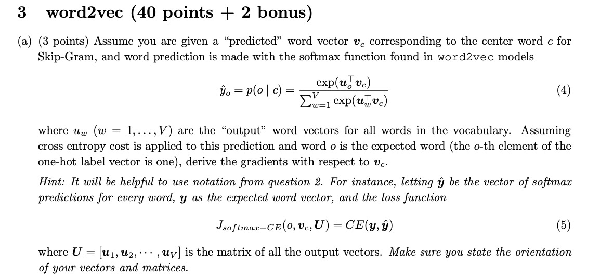
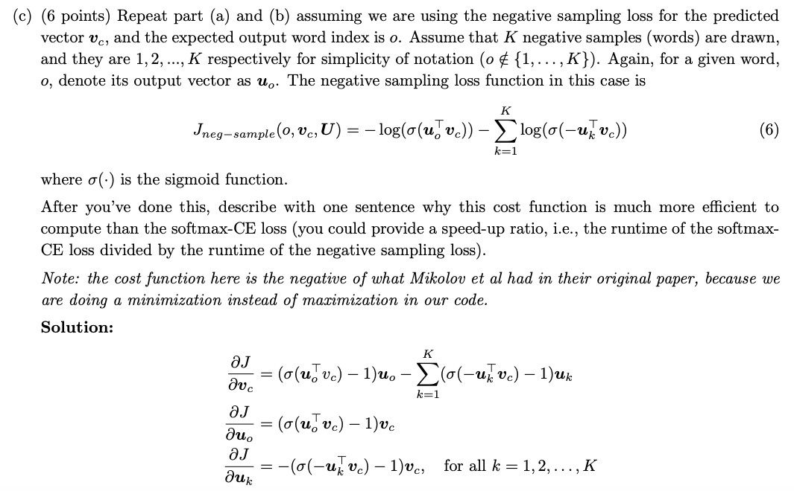
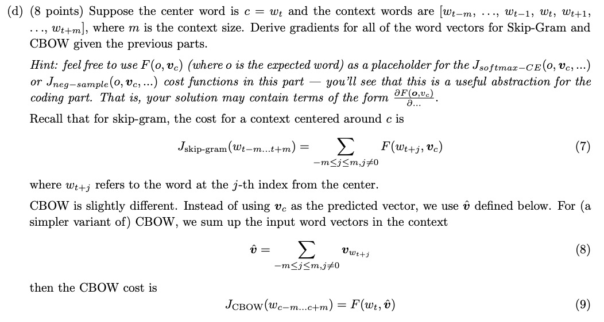
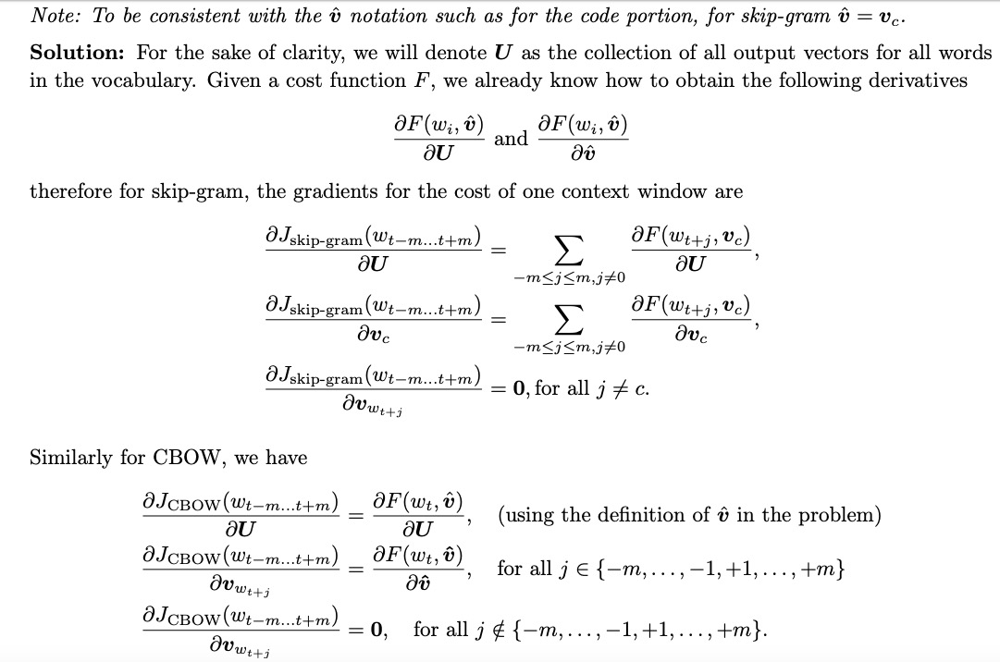

CS224N 是目前斯坦福开设的一门用Deep Learning 来做NLP问题的一门课程，这个博客主要是完成CS224N的课程作业，并讲解一下思路，欢迎指正。
Softmax
- 比较容易
- 代码参考可以参考我的github,写的比较详细 []
Neural Network Basics
- 经典的sigmod导数计算
$$\frac{\text{d}(\sigma(x))}{\text{x}} = \frac{e^{x}(1+e^x) - e^x(e^x)}{(1+e^x)^2} = \sigma(x)(1-\sigma(x))$$ - 交叉熵公式相对于$\boldsymbol{\theta}$的导数
交叉熵公式
$$\text{CE}(\boldsymbol{y}, \boldsymbol{\hat{y}})=-\sum_{i} {y_i \log(\hat{y}_i)}$$
其中$\boldsymbol{y} = \text{softmax}(\boldsymbol{\theta})$
注意$\boldsymbol{y}$是one-hot向量，我们这里假设其$k_{th}$维度是1，其余维度均为0。
导数推导应该分$i=k_{th}$ and $i\neq k_{th}$讨论,注意此时Cross Entropy可以表达这样形式 $$\text{CE}(\boldsymbol{y}, \boldsymbol{\hat{y}})= \log \frac{e^{\theta_{k}}}{\sum_{i}e^{\theta_i}}$$
当$i=k$
\begin{equation}
\begin{split}
\frac{\partial CE}{\partial \theta_k}&=\frac{\partial \log \frac{e^{\theta_{k}}}{\sum_{i} e^{\theta_i}}}{\partial \theta_k} \\
&= \frac{\partial \log \frac{e^{\theta_{k}}}{\sum_{i \neq k}e^{\theta_i}+e^{\theta_k}}} {\partial \theta_k} \\
&= -\frac
{\sum_{i\neq k}e^{\theta_i}+e^{\theta_k}}{e^{\theta_k}}
\cdot
\frac{e^{\theta_k}}
{\sum_{i\neq k}e^{\theta_i}+e^{\theta_k}} \cdot
\frac{\sum_{i \neq k}e^{\theta_i}}{\sum_{i\neq k}e^{\theta_i}+e^{\theta_k}} \\
&= \hat{y}_k - 1
\end{split}
\end{equation}当$i \neq k$
\begin{equation}
\begin{split}
\frac{\partial CE}{\partial \theta_i}&=\frac{\partial \log \frac{e^{\theta_{k}}}{\sum_{j} e^{\theta_j}}}{\partial \theta_i} \\
&= \frac{\partial \log \frac{e^{\theta_{k}}}{\sum_{j \neq i}e^{\theta_i}+e^{\theta_i}}} {\partial \theta_k} \\
&=
-\frac
{\sum_{i\neq k}e^{\theta_i}+e^{\theta_k}}{e^{\theta_k}}
\cdot
\frac{e^{\theta_k}}
{\sum_{j}e^{\theta_j}} \cdot
\frac{e^{\theta_i}}{\sum_{j}e^{\theta_j}} \\
&= \hat{y}_i
\end{split}
\end{equation}
总结，可以写成
$$\frac{CE}{\boldsymbol{\theta}} = \boldsymbol{\hat{y}}-\boldsymbol{y}$$
- 有了前面的积累，这个直接用链式法则即可
\begin{equation}
\begin{split}
\frac{\partial CE}{\partial \boldsymbol{x}} &= \frac{\partial CE}{\partial \boldsymbol{z_2}} \cdot \frac{\partial z_2}{\partial \boldsymbol{h}} \cdot \frac{\partial h}{\partial \boldsymbol{z_1}} \cdot \frac{\partial z_1}{\partial \boldsymbol{x}} \\
&= (\boldsymbol{\hat{y}} - \boldsymbol{y}) \cdot \boldsymbol{W}_2^T \cdot z_1(1-z_1) \cdot \boldsymbol{W}_1^{T}
\end{split}
\end{equation} - 参数个数
其实就是统计 $\boldsymbol{W_1}, \boldsymbol{W_2}, \boldsymbol{b_1},\boldsymbol{b_2}$个数。
显然是 $$D_x\cdot H + H + H \cdot D_y + D_y$$
Word2Vec

这里提示了，其实就是之前cross entropy 对于softmax 的输入的求导，不妨设 $\boldsymbol{u}_w^T \boldsymbol{v}_c = \hat{y}_w$, 也就是$\boldsymbol{U}\boldsymbol{v}_c = \boldsymbol{\hat{y}}$, 其中 $\boldsymbol{U} \in R^{V \times d}$, V 代表字典大小
显然，由链式法则可以得到$$\frac{\partial J}{\partial \boldsymbol{v}_c} = \boldsymbol{U}(\hat{y} - \boldsymbol{y})$$同样由链式法则得到
$$\frac{\partial J}{\partial \boldsymbol{U}} = \boldsymbol{v}_c (\hat{\boldsymbol{y}} - \boldsymbol{y})^T$$Negative sampling loss 下导数的计算
同理，都用链式法则即可, 还是比较简单的所有梯度的计算

情感分析 Sentiment Analysis